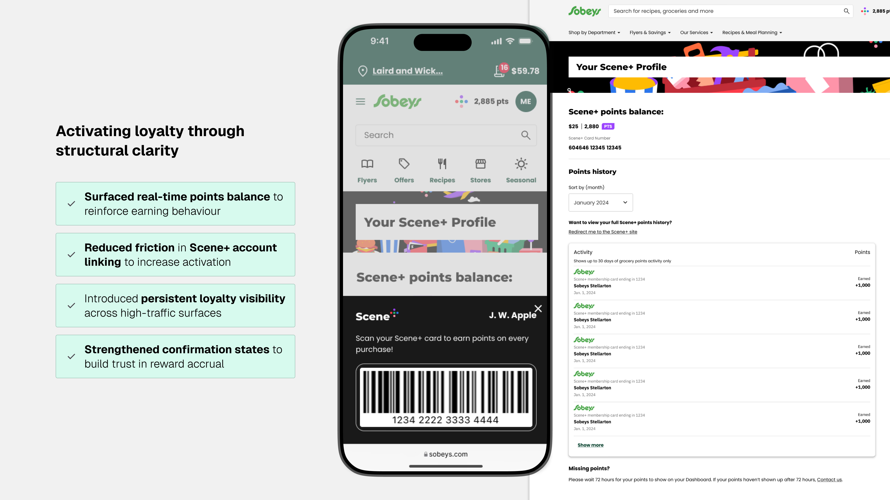
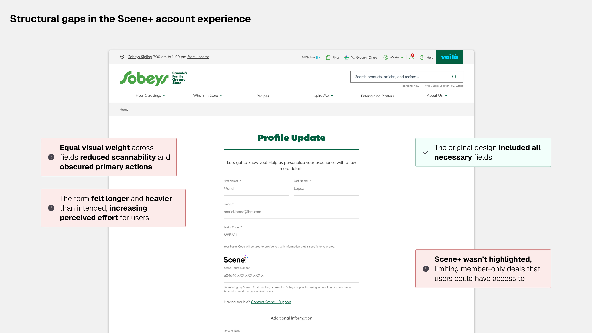
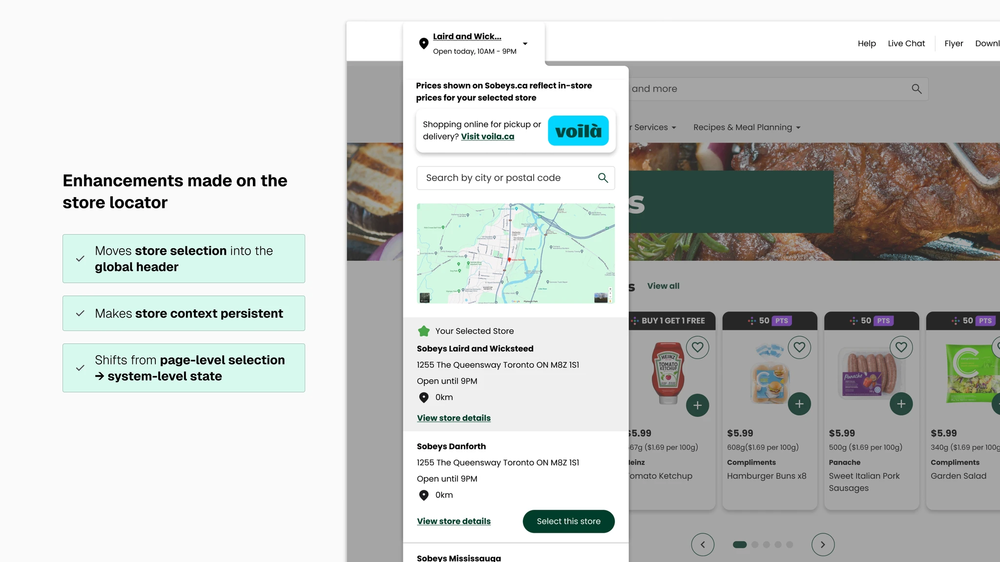
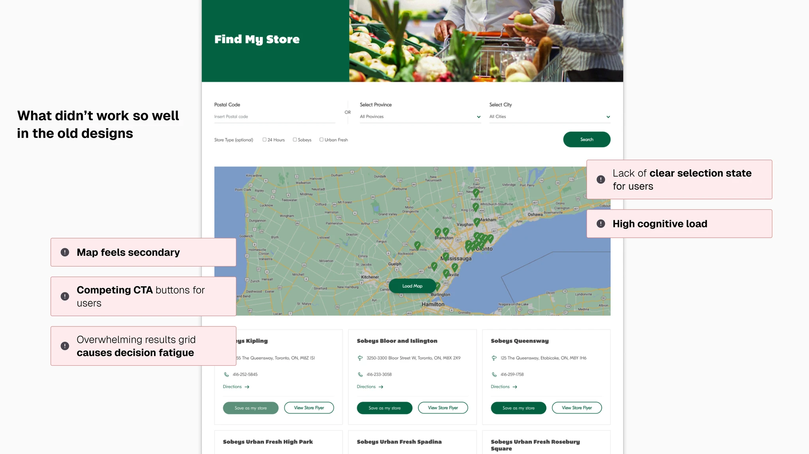
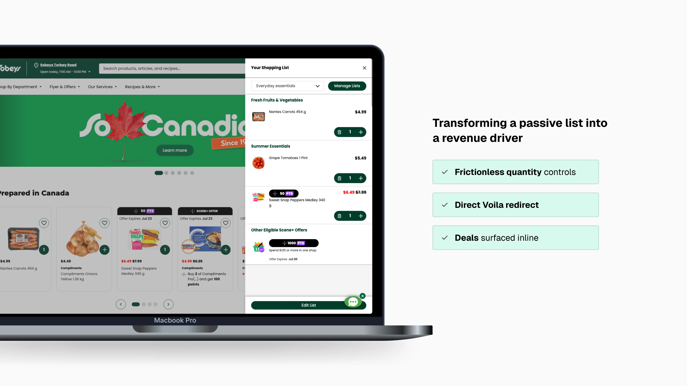
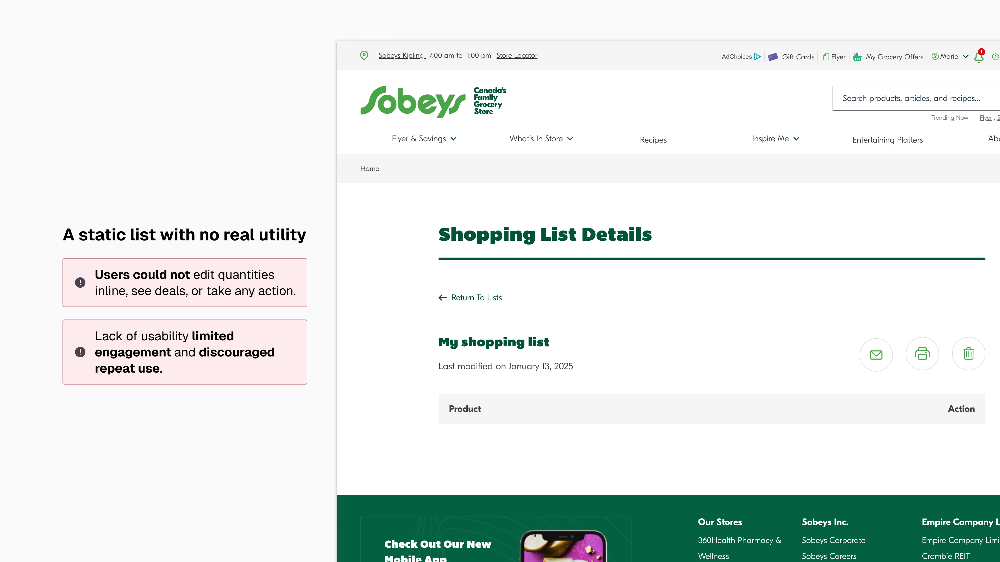

Scaling Sobeys' digital shopping experience for 1M+ monthly users

Role
Senior Product Designer
Timeline
8 months
Team
- Shannon M. (Product Design Manager)
- Valerie C. (Product Manager)
- Avinash R. (Technical Architect/Engineer)
- Justin C. (Design Intern)
Tools
Figma, FigJam, ChatGPT
Overview
Empire hired IBM to redesign with a multichannel approach across Sobeys, IGA, Foodland, FreshCO, Safeway, and ThriftyFoods.
Problem
Multiple fragmented flows caused high drop-offs. Sobeys' online presence was falling behind its competitors. The time for change had come.
Outcome
2 platforms launched (so far). Serving 1M+ monthly users as of Aug 2025.*
Identity & Trust
Integrating Scene+ loyalty into the Sobeys account experience
Users lacked a clear pathway to view and connect their Scene+ account, limiting point accrual and reducing visibility into loyalty value.

After · Scene+ account experience redesign

Before · Scene+ account structure gaps causing poor experience
Conversion & Discovery
Leveraging visual hierarchy to drive promotions and loyalty on the product details page
The previous experience lacked a product catalogue, limiting discovery to static flyer browsing. The redesign introduced a structured product catalogue with optimized visual hierarchy to highlight key deals and Scene+ offers while streamlining add-to-list and pickup/delivery options.

After · Product details page with optimized visual hierarchy

Before · Sobeys lacked a product catalogue, limiting discovery
Discovery & Wayfinding
Redesigning the store locator to improve pricing accuracy and inventory confidence
The original experience prioritized a dense results grid, requiring users to scan multiple store cards to find relevant details. The redesign shifts to a selected-store model, surfacing key information, services, and primary actions within a focused context panel to reduce friction and improve clarity.

After · Redesigned store locator with persistent store context

Before · Dense results grid causing high cognitive load
Retention & Habit Forming
Designing the shopping list for long-term loyalty and retention
With only 5% adoption, the static and unusable shopping list failed to drive meaningful engagement. I reimagined the experience around a deals-first strategy, enabling effortless item saving and seamless redirection to Voila.ca for pickup or delivery, while positioning the tool for continuous usage and long-term customer loyalty.

After · Shopping list redesigned as a deals-first, habit-forming experience

Before · Static list with no inline deals, quantities, or actions
Process
Leveraging AI to move faster and think deeper
I leveraged AI throughout the design process to accelerate content creation, explore edge and error states, and stress-test user flows across complex scenarios.
Main tool: ChatGPT — Used to rapidly generate copy variants, simulate edge cases, and pressure-test flow logic against real user scenarios at scale.
Outcome
2 platforms launched (so far). Serving 1M+ monthly users as of Aug 2025.*
Key Learnings & Reflection
Main takeaways
Engagement requires incentive
Users didn't disengage because they didn't need a shopping list. They disengaged because the experience offered no immediate value. Without visible savings, loyalty rewards, or a clear path to purchase, there was little incentive to return. Designing for engagement meant embedding tangible benefits directly within the list experience.
Loyalty is earned through utility
Loyalty features must do more than exist: They must support real behaviours. By integrating pricing, rewards, and Voila.ca into the site, the experience became a functional bridge between browsing and purchase, reinforcing repeat engagement.